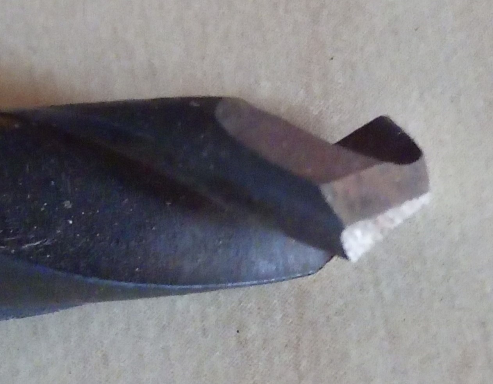

Profesionální broušení nožů a vrtáků v Ondřejově a okolí
Jsem František Šubrt, řemeslník působící v oblasti Ondřejova, Senohrab, Mnichovic, Benešova a Říčan. Specializuji se na profesionální broušení nožů a vrtáků pro domácnosti, řemeslníky i firmy v celém regionu.
📞 Mobilní služby
Broušení přímo u vás doma nebo v provozovně. Dojíždím do celého regionu.
⚡ Rychlé provedení
Většinu zakázek vyřídím do 24 hodin. Nouzové broušení možno i ve stejný den.
🛠️ Odborné vybavení
Používám profesionální brusné stroje a nástroje pro dokonalé výsledky.
💯 Záruka kvality
Na veškeré práce poskytuji záruku. Spokojenost zákazníků je prioritou.
Broušení nožů v Ondřejově a okolí
Nabízím broušení všech typů nožů:
- Kuchyňské nože - od malých nožů na ovoce po velké kuchařské nože
- Zahradní nože - nůžky, srpy, kosy, křovinořezy
- Řemeslnické nože - dláta, řezbářské nože, skládací nože
- Speciální nože - lovecké nože, rybářské nože, sběratelské kusy
💵 Cena broušení nožů
Cena se odvíjí od stavu nože a typu broušení. Základní broušení tupého nože začíná již od 50 Kč/kus. Za komplexní broušení s úpravou geometrie čepele účtuji 100-200 Kč dle náročnosti.
Poškozené nože (zlomené hroty, poškozené ostří) vyžadují individuální cenovou kalkulaci.
Broušení vrtáků v regionu Praha-východ
Specializuji se také na broušení vrtáků všech typů a velikostí:
- Kovové vrtáky - HSS, kobaltové, pobeditové
- Dřevěné vrtáky - Forstnerovy, perkové, šnekové
- Univerzální vrtáky - pro kov, dřevo, plast
- Speciální vrtáky - pro beton, sklo, keramiku
💵 Cena broušení vrtáků
Broušení standardního vrtáku (do 10mm): od 30 Kč/kus
Broušení větších vrtáků (nad 10mm): od 50 Kč/kus
Oprava poškozených vrtáků: individuální cena dle rozsahu poškození
Při větším množství vrtáků poskytuji množstevní slevy.
Techniky broušení
Používám kombinaci moderních a tradičních technik:
- Strojové broušení - pro přesnost a konzistenci
- Ruční broušení - pro speciální nože a jemné úpravy
- Diamantové broušení - pro tvrdé materiály a keramické nože
- Mokré broušení - pro ochranu ostří před přehřátím
Mobilní broušení přímo u vás
Jako jediný v regionu nabízím mobilnní služby broušení přímo u zákazníka. Přijedu k vám domů nebo do firmy s veškerým potřebným vybavením a nabrousím vaše nože a vrtáky na místě.
Výhody mobilního broušení:
- Ušetříte čas - nemusíte nikam jezdit
- Okamžité vyřízení - vidíte práci na vlastní oči
- Konzultace na místě - můžeme probrat optimální úhel broušení
- Vhodné pro firmy - minimální prostoje v provozu
📞 Kontakt pro broušení nožů a vrtáků
Potřebujete nabrousit nože nebo vrtáky v Ondřejově, Senohrabech, Mnichovicích, Benešově nebo Říčanech?
Telefon: +420 604 590 261
Email: fandasubrt@seznam.cz
Působnost: Ondřejov, Senohraby, Mnichovice, Benešov, Říčany a okolí do 30 km
Dostupnost: Po-Pá 8:00-18:00, So 8:00-14:00, možno i po domluvě
Neváhejte mě kontaktovat pro nezávaznou cenovou kalkulaci nebo konzultaci.
Příklady mé práce - broušení nožů a vrtáků





Často kladené dotazy
Jak dlouho trvá broušení nože?
Standardní broušení jednoho nože trvá 10-20 minut. Složitější úkony (oprava poškození) mohou trvat i 30-60 minut.
Do jakých obcí dojíždíte?
Do všech obcí v okruhu cca 30 km od Ondřejova. Nejčastěji: Ondřejov, Senohraby, Mnichovice, Benešov, Říčany, Mirošovice, Strančice, Hrusice, Turkovice, Poříčí nad Sázavou, Chocerady.
Brousíte i keramické nože?
Ano, brousím i keramické nože pomocí speciálních diamantových brusných kotoučů.
Jak často mám nechat brousit nože?
Profesionální kuchaři: každý týden. Domácnosti: každé 2-3 měsíce. Zahradní nářadí: před sezónou a po sezóně.